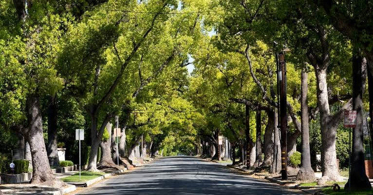

About Us
Who are we?
Net-zero Malaysia is an awareness project for Malaysians who want to understand climate change and what can be done about it. We explain the problem in plain language and show practical solutions, so that people do not need a science degree to join the conversation.
We believe climate action should be realistic. People should not have to give up their jobs, their comfort or their daily routines. The biggest cuts in emissions come from changing the systems around us: how we make electricity, how we move around, and how we build cities and grow food.
Our Mission
Our mission is to raise awareness among Malaysians about climate change and to lay out clear, realistic solutions for decarbonisation in energy, transport, aviation, buildings and food. We want to show that a low-carbon life can be comfortable and convenient, and that it needs action from the whole system, not only from individuals.
Our Vision
We see a Malaysia where clean electricity powers homes and businesses, where public transport is reliable, and where cities are built for people instead of only for cars. In this Malaysia, we reach net-zero emissions without lowering our quality of life.
